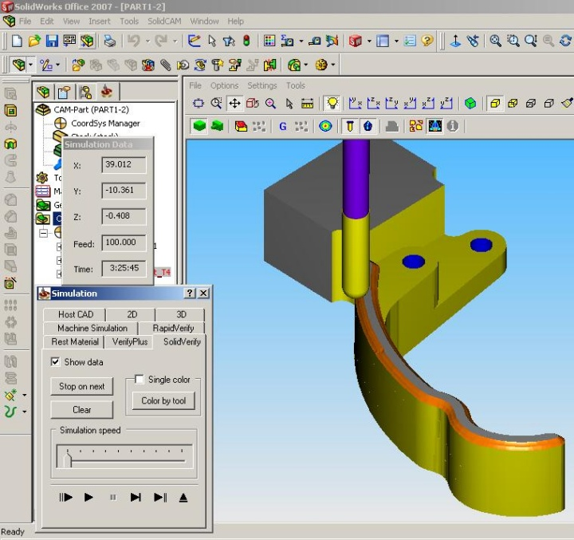
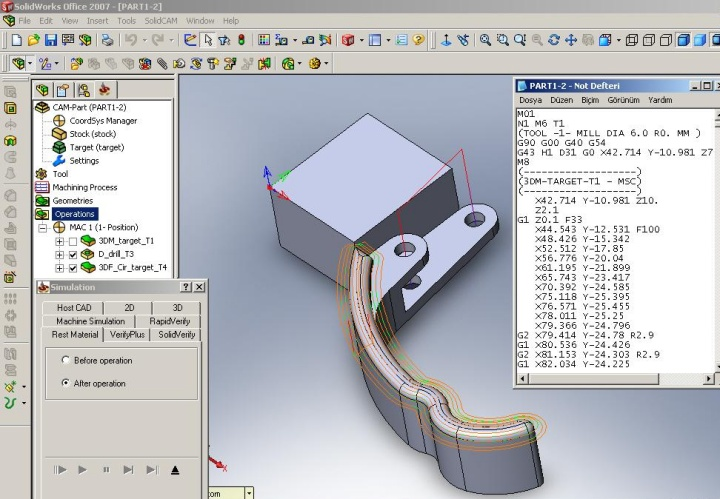
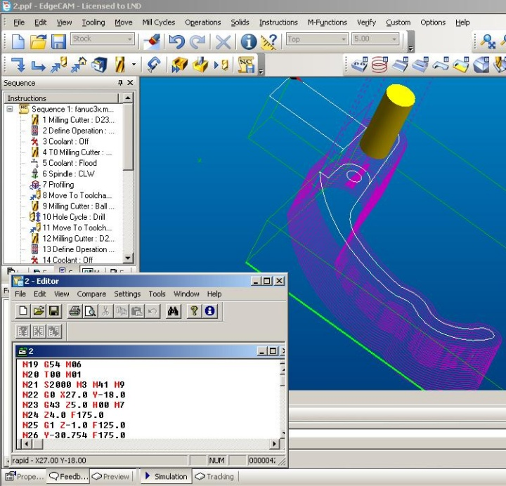

|
Model, yapýsýndan dolayý olarak üç eksenli CNC freze tezgahýnda üç aþamada iþlenebilmektedir. Hedef modele eriþebilmek için parçayý tezgaha üç kez farklý pozisyonlarda baðlamak ve referans belirlemek gerekmektedir. Ýþlemede kullanýlan takýmlar ve özellikleri Tablo 1'de verilmiþtir. Takým yollarý da belirledikten sonra Þekil 4 ve Þekil 5'te gösterildiði gibi her iki yazýlýmla da yapýlacak iþlemler simüle edilerek doðrulanmýþtýr. Doðrulamanýn ardýndan NC kodlarý çýkartýlarak üç eksenli bir CNC freze tezgahýnda parçanýn iþlenebilmesi için gerekli tüm aþamalarý bitirilmiþtir. Þekil 6 ve Þekil 7'de CAM'de oluþturulan NC kodu çýktýsý görülmektedir.

Þekil 4: Tasarlanan kapý kolunun SolidCAM'deki simülasyonunun görüntüsü

Þekil 5: Tasarlanan kapý kolunun EdgeCAM'deki simülasyonunun görüntüsü

Þekil 6: NC kodu çýktýsý (SolidCAM)

Þekil 7: NC kodu çýktýsý (EdgeCAM)
Tablo 1: Ýþlemede kullanýlan takýmlar ve özellikleri
| Kesici Takým Çapý |
Kesici Boyu |
Takým Adý |
6 mm |
25 |
Parmak freze |
6 mm |
20 |
Küresel uçlu parmak freze |
5 mm |
30 |
Matkap |
Þekil 6 ve Þekil 7'de gösterilen NC kodlarý hafýza kartýyla, uygulamada kullanýlan TAKSAN TMC 500/700 CNC freze tezgahýna (Dik iþleme merkezi) aktarýlarak modelin üretimi yapýlmýþtýr.
Modelin üretiminde önce kolay iþlenebilirlik özelliði ile ahþap malzeme kullanýlmýþtýr. Ahþabýn mengenede ezilmesinden dolayý ikinci aþamada sýfýrlama sorunu yaþanmýþtýr. Ýlk aþamanýn iþlenmiþ hali Þekil 8'de görülmektedir.

Daha sonra malzeme olarak polyamid kullanýlmýþ, bu sefer de malzemenin esnemesinden dolayý sýfýrlama sorunu yaþanmýþtýr. Çalýþma devam etmekte ve bir sonraki aþamada metal malzeme ile üretimin yapýlmasý planlanmaktadýr.


Þekil 8: Üretilen ergonomik iç kapý kolu
6. Sonuçlar
Bu çalýþmada soyut olarak beyinde canlandýrýlan bir parçayý somut olarak ele alabilmek için aþaðýda listelenen tasarým-üretim süreci gerçekleþtirilmiþ ve basamaklarda ilerlerken CAD/CAM/CNC iliþkisi kurulmuþtur.
- Tasarým
- Analiz
- Çizim
- Süreç planlama
- Parça programlama
- Program doðrulama
- Parça iþleme
- Kontrol
Sürecin CAD aþamasýnda SolidWorks ve CATIA olmak üzere 2 ayrý yazýlým kullanýlmýþtýr. Bunun amacý farklý CAD yazýlýmlarý kullanýldýðýnda çizim ve modelleme esnasýnda karþýlaþýlabilecek farklýlýklarý belirleyerek, bu programlar arasýnda karþýlaþtýrma yapabilmektir.
Ýki CAD yazýlýmýyla tasarýmýn modellenmesinde SolidWorks'ün esnekliði ve kullaným kolaylýðý dikkate deðer bulunmuþtur. CATIA'nýn ayrýntýlý ve karýþýk modülleri karmaþýk modellerde yaratýcý çözümler sunsa da daha basit modeller için SolidWorks kullanýlmasý uygundur.
CAM aþamasýnda da iki ayrý yazýlýmla (EdgeCAM ve SolidCAM) sürece devam edilmiþtir. SolidCAM'de (entegre bir program olmasýnýn avantajýyla) takým yollarý modelin üzerinde daha rahat oluþturulabilmektedir. Aslýnda istisnalarýn dýþýnda SolidCAM takým yolu belirlemeyi de gereksiz bir hale getirmiþ durumdadýr. Oluþturulan stok model ve hedef model sayesinde 3 boyutlu frezelemede birçok iþlemi otomatik olarak tanýmaktadýr.
Ayrýca CNC freze tezgahýnda parça iþlenirken, seçilen malzemelerin (ahþap ve polyamid)
mengenede ezilmesinden ve esnemesinden kaynaklý takým sýfýrlama sorunlarý yaþanmýþtýr.
Bu þekilde CAD/CAM/CNC entegrasyonu saðlanarak tasarým-üretim sürecinin her aþamasýnda bilgisayar desteðiyle çalýþma tamamlanmýþtýr.
Çalýþma göstermiþtir ki; CAD/CAM sistemleri ve CNC takým tezgahlarý her ne kadar tasarýmý ve üretimi kolaylaþtýrsa da, insan faktörü yine en önemli etken olmaya devam etmektedir. Öyle ki; henüz tasarým aþamasýndayken parçanýn CNC'deki üretimini göremeyen bir kullanýcý için sistemin getirdiði hiçbir fayda bulunmamaktadýr.
7. Teþekkür
Bu çalýþmaya bilgi ve deneyimleriyle katkýda bulunan danýþmaným Dr. Þeref Aykut'a, ayrýca desteklerinden dolayý Yrd. Doç. Dr. Süleyman Semiz'e teþekkür ederim.
8. Kaynaklar
[1] M. P. Groover ve E. W. Zimmers, (M. Carnis) CAD/CAM Computer-Aided Design and Manufacturing, Antony Rowe Ltd, Eastbourne, 2002.
[2] L. Yaðmur, "Tasarým ve imalatta CNC ve CAD/CAM sistemlerinin fonksiyonlarý", TÜBÝTAK - UME, Aðustos 2004
www.TurkCADCAM.net/rapor/imalatta-cadcam (08.04.2008).
[3] Z. Kýral, "Bilgisayar Destekli Tasarým Ders Notlarý", T.C. Dokuz Eylül Üniversitesi Mühendislik Fakültesi Makine Mühendisliði Bölümü, 2007
www.deu.edu.tr/userweb/zeki.kiral/dosyalar/hafta_6.pdf (10.04.2008).
[4] M. Akkurt, Bilgisayar Destekli Takým Tezgahlarý (CNC) ve Bilgisayar Destekli Tasarým ve Ýmalat (CAD-CAM) Sistemleri, Birsen Yayýnevi, Ýstanbul, 1996.
[5] M. A. Kibaroðlu, "Tasarým Sürecinde Üç Boyutlu Modellemenin Rolü ve CAD/CAM Programlarýnýn Sýnýflandýrýlmasý", T.C. Mimar Sinan Güzel Sanatlar Üniversitesi Endüstri Ürünleri Tasarýmý A.B.D., Yüksek Lisans Tezi, Ýstanbul, 2006.
[6] Þ. Aykut, "CNC Tezgahlarýnda Kullanýlan Kesici Takýmlarýn Tasarým Esaslarý", T.C. Marmara Üniversitesi Makine Eðitimi Bölümü, Yüksek Lisans Tezi, Ýstanbul, 1999.
[7] Muhammed Dinçel, "CNC Takým Tezgahlarý" Trakya Üniv. Tekirdað Ziraat Fak. Tarým Makineleri Böl. Diploma Çalýþmasý, Tekirdað 1999
www.TurkCADCAM.net/rapor/cnc-md (15.04.2008).
[8] E. S. Gözlüklüoðlu Erdinler, "CAD Sistemleri ve Türkiye Mobilya Endüstrisinde Uygulanma Etkinliðinin Analizi", T.C. Ýstanbul Üniversitesi Orman Endüstri Mühendisliði A.B.D., Doktora Tezi, Ýstanbul, 2005.
[9] S. Alan, "CNC Eðitim Seti Tasarýmý", T.C. Selçuk Üniversitesi Bilgisayar Sistemleri A.B.D., Yüksek Lisans Tezi, Konya, 2006.
[10] U. BüyükAlan, "3 Eksenli CNC Tezgâh Tasarýmý ve Uygulamasý", T.C. Yýldýz Teknik Üniversitesi Makine Mühendisliði A.B.D., Yüksek Lisans Tezi, Ýstanbul, 2005.
[11] A. Kurtoðlu, K. H. Koç, Ü. Öner, "CAD/CAM Sistemler ve Türkiye Mobilya Endüstrisi", Makine-Metal Teknoloji Dergisi, Sayý 66, s 114-120, 1997.
|